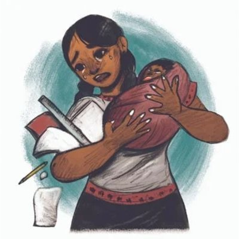

CONSECUENCIAS DEL EMBARAZO ADOLESCENTE
A corto o mediano plazo:
la madre adolescente puede caer en cuatro problemas socio legales muy serios como son: la prostitución, el consumo
de drogas “lícitas” e “ilícitas”, la delincuencia y el maltrato infantil.
En lo referente a la prostitución, se debe reconocer que esta condición es multifactorial y donde intervienen,
además de la personalidad predisponente, las “adversidades sociales acumuladas” entre ellas, la pobreza y la
promiscuidad, el bajo nivel educativo, la marginalidad social, etc.
Largo plazo
Es indispensable considerar que las consecuencias del embarazo adolescente afecta a ambos miembros de la pareja, aunque es indiscutible el
hecho de que por razones y biológicas y sociales es la mujer quien más las sufre.
Entre ellas, hay que destacar:
la fuerte carga emocional a consecuencia de su cambio físico y la influencia, habitualmente negativa,
del medio donde vive.
Cuando ella informa a la familia de su embarazo, habitualmente es reprendida por sus padres u otros familiares, quienes la culpan de sentirse defraudados por su acción. De esta manera, es agredida emocional y, en ocasiones, físicamente. En algunos momentos también puede ser agredida por su pareja.
Como consecuencia de su nueva condición, la adolescente puede presentar comportamientos poco habituales, destacando:
El descuido de su salud física y emocional.
Infringirse daño físico e incluso provocarse el aborto.
Al bajar su rendimiento escolar y ser motivo de burla por sus compañeros, es probable que abandone la escuela.
Otro problema que ella tiene que resolver, es cómo solventar económicamente su embarazo y los estudios.
Ante esa situación, casi siempre se torna dependiente de la ayuda familiar y/o tiene la necesidad de buscar trabajo para su manutención y la de su hijo.
Ante esta última posibilidad, su situación es crítica ya que no tiene una formación educativa adecuada para conseguir un trabajo aceptablemente remunerado debido a que su experiencia laboral es nula o muy limitada.
En la minoría de los casos, su pareja la apoya y por ello también tiene que abandonar los estudios porque necesita trabajar.
Si cuenta con el apoyo de su familia, la nueva familia vivirá en la casa de sus padres y probablemente pueda reiniciar los estudios. Sin embargo, habitualmente sigue realizando sus actividades sociales (salir con sus amigos, practicar deportes, etc.
Consecuencias fisicas, psicologicas y economicas
oRuptura del proyecto de vida
oDeserción escolar
oConflictos familiares y expulsión del hogar
oAbandono de la pareja
oAlteración emocional diversa
oRechazo escolar y social
oProblema para obtener un empleo
oCarencia de un ingreso monetario suficiente.
oInclinación al consumo de substancias lícitas e ilícitas.
oTendencia a la prostitución o delincuencia
Principales expresiones de impacto emocional en las madres adolecentes:
Riesgos Personales
oAusencia de confianza en sí misma
oAlteraciones del carácter
oIncapacidad de organización y planeación para esta nueva etapa de vida
oFalta de control de sus emociones
oImprecisión en sus decisiones
oRiesgos en su salud física
oPlacenta previa
oPreeclampsia
oÓbito
oAnemia severa
Riesgos Sociales
oProstitución
oAdicciones
oDelincuencia
oSuicidio
oDoble fenómeno de maltrato infantil
El embarazo adolescente tiene otras consecuencias además de los cambios hormonales, entra en juego la emotividad de la adolescente. Su proceso de formación emocional se altera, la confianza en sí misma se ve vulnerada al no saber si será capaz de superar la etapa que vive y ello, entre otras
cosas, puede afectar su salud física.

REGRESAR